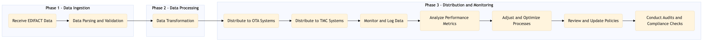

This process document outlines the EDIFACT GDS Airline Content Management for OTA and TMC systems, ensuring seamless integration and management of airline content.
| Trigger | Receiving updated EDIFACT data from airlines via GDS systems. |
| Outcome | Successful ingestion, processing, and distribution of airline content across all relevant OTA and TMC systems for accurate inventory management and booking capabilities. |
| Systems | AWS SageMaker Kafka Snowflake Expedia Open World Partner Central Amadeus NDC Sabre GDS Travelport EVC One Key TravelAds Salesforce Tableau Concur T2 Concur Expense Amex GBT Neo/Complete International SOS Cvent Amex Corporate Card VCN Analytics Cloud Workday |

Click to enlarge
| Step | Name & Pain Point | Role | System | Input | Output | KPI | Flags |
|---|---|---|---|---|---|---|---|
| 1.1 | Receive EDIFACT Data Handling large volumes of EDIFACT data efficiently | Data Ingestion Team | AWS SageMaker, Kafka | EDIFACT files from airlines | Raw data stored in Snowflake | 95% data ingestion success rate | ⚠ Exception |
| 1.2 | Data Parsing and Validation Ensuring compliance with EDIFACT standards | Data Processing Team | AWS SageMaker, Snowflake | Raw data from Snowflake | Parsed and validated airline content | 90% data validation accuracy | ⚠ Exception |
| 1.3 | Data Transformation Mapping EDIFACT fields to internal system schemas | Data Processing Team | AWS SageMaker, Snowflake | Parsed and validated data | Transformed airline content for integration | 85% transformation accuracy | ⚠ Exception |
| 1.4 | Distribute to OTA Systems Ensuring real-time updates across multiple OTA platforms | Integration Team | Expedia Open World, Partner Central, Amadeus NDC, Sabre GDS, Travelport, EVC, One Key, TravelAds | Transformed airline content | Updated inventory in OTA systems | 98% successful distribution rate | ⚠ Exception |
| 1.5 | Distribute to TMC Systems Handling complex integration with diverse TMC platforms | Integration Team | Concur T2, Concur Expense, Amex GBT Neo/Complete, Amadeus GDS, S/4HANA, International SOS, Cvent, Amex Corporate Card, VCN, Analytics Cloud, Workday | Transformed airline content | Updated inventory in TMC systems | 97% successful distribution rate | ⚠ Exception |
| 1.6 | Monitor and Log Data Maintaining high availability and performance | Monitoring Team | AWS SageMaker, Snowflake, Kafka, Salesforce, Tableau | All system activities | Real-time monitoring dashboards and logs | 100% system uptime | ⚠ Exception |
| 1.7 | Analyze Performance Metrics Extracting meaningful insights from large datasets | Analytics Team | Tableau, Salesforce | Monitoring data | Performance reports and insights | 95% accuracy in performance metrics | ⚠ Exception |
| 1.8 | Adjust and Optimize Processes Balancing operational efficiency with system flexibility | Process Improvement Team | All systems involved in the process | Performance reports and insights | Optimized processes and workflows | Continuous improvement in process efficiency | ⚠ Exception |
| 1.9 | Review and Update Policies Keeping up with regulatory changes and business needs | Policy Management Team | All systems involved in the process | Business requirements and changes | Updated policies and procedures | 100% policy compliance | ⚠ Exception |
| 1.10 | Conduct Audits and Compliance Checks Ensuring full compliance with industry standards | Compliance Team | All systems involved in the process | Audit requirements and guidelines | Compliance reports and certifications | 99% compliance rate | ⚠ Exception |